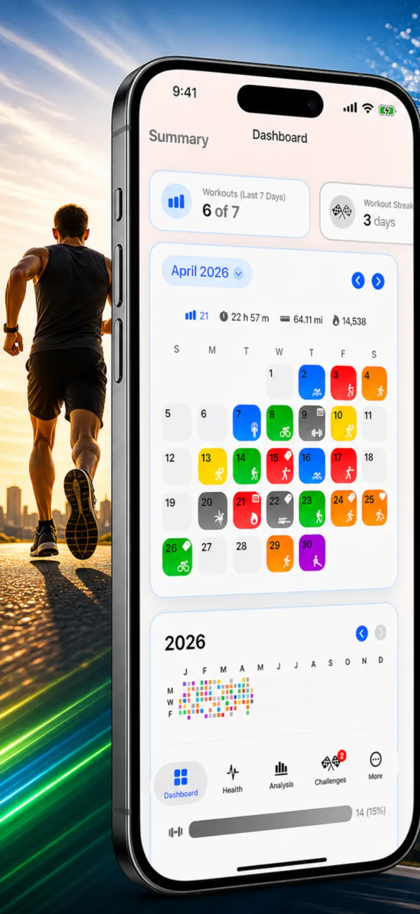
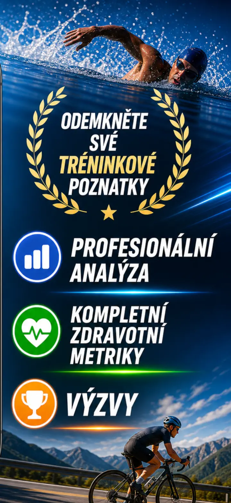
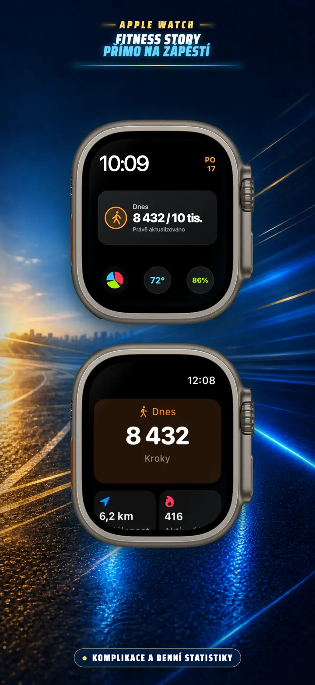
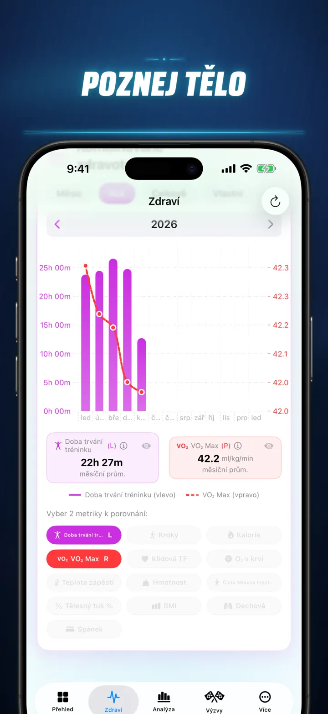
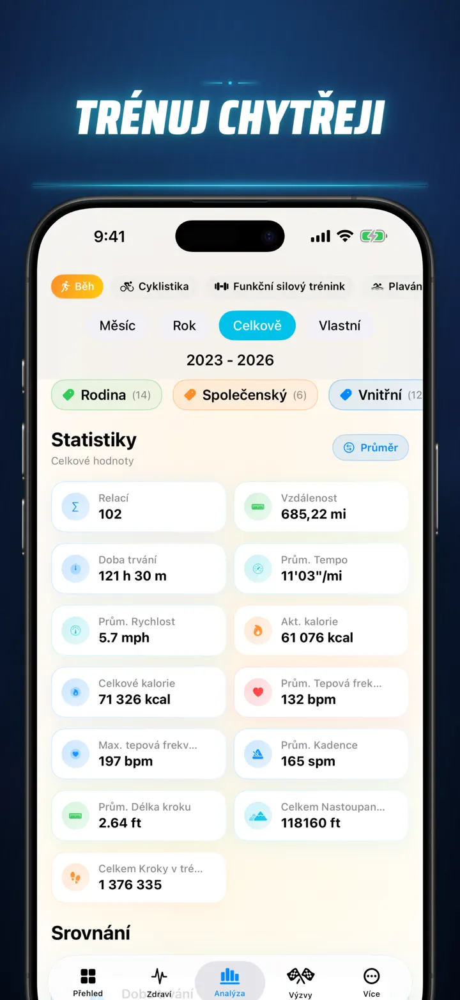
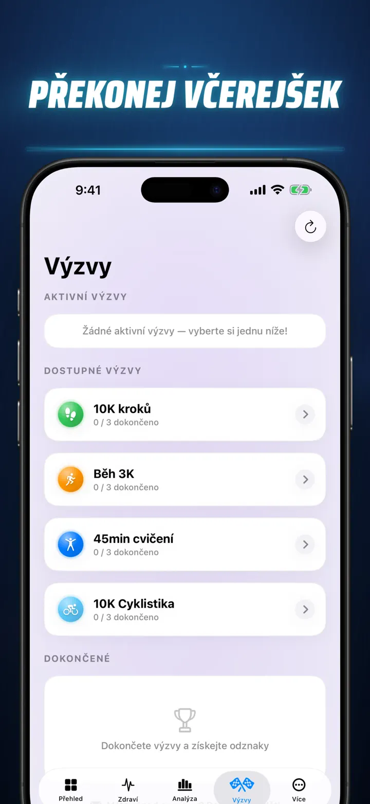
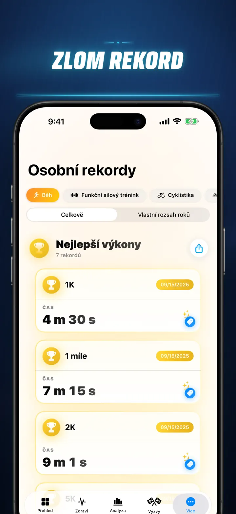
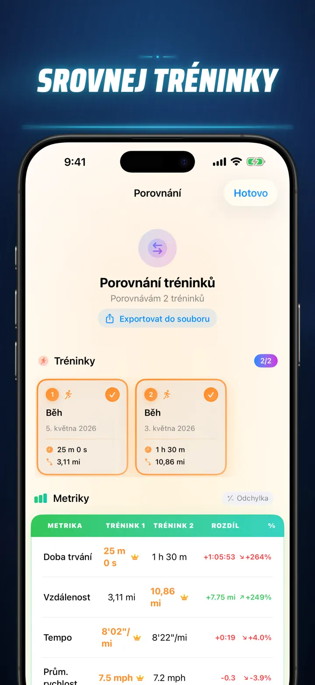
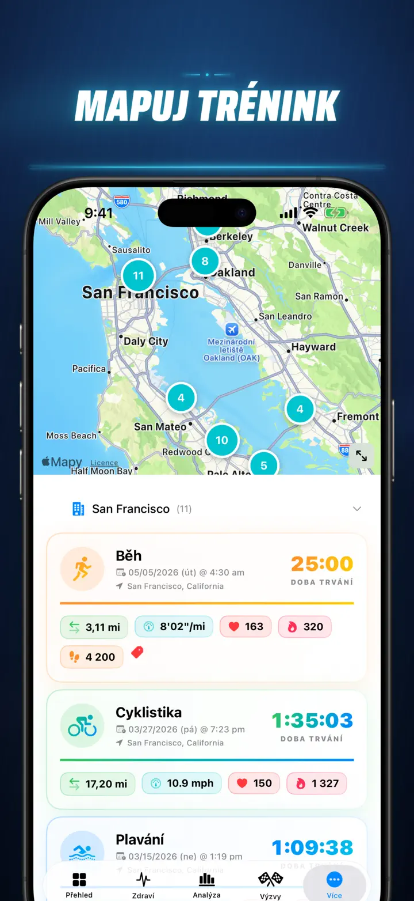
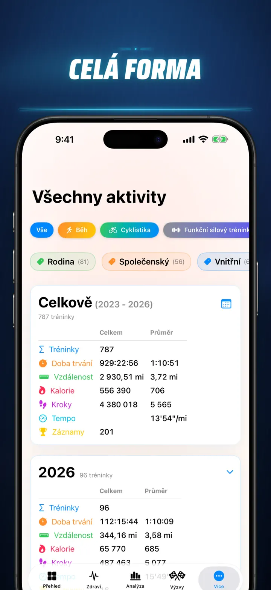

Fitness Story
Odhalte své fitness přehledy
Nově na Apple Watch: dnešní kroky na libovolném ciferníku a obrazovka Dnes se vzdáleností, kaloriemi a patry — přímo z Apple Zdraví.
Stáhnout v App Storu
O aplikaci
Přestaňte hádat. Začněte vědět. Fitness Story přeměňuje vaše data Apple Zdraví v nejsilnější a nejdetailnější analýzu na iOS. Žádné účty. Žádné servery. Jen vaše celá fitness cesta, vizualizovaná.
Ať sledujete fáze spánku, analyzujete kadenci běhu nebo honete maratonský rekord – toto je all-in-one dashboard, který vaše tvrdá práce zaslouží.
Funguje s jakýmkoli zařízením nebo aplikací, která se synchronizuje s Apple Zdravím — Apple Watch, Garmin, Polar, Suunto, Zwift a další.
ANALÝZA PROFESIONÁLNÍ ÚROVNĚ
- Trendové a srovnávací grafy: Použijte krabicové grafy pro zobrazení mediánu, kvartilů a odlehlých hodnot pro každý typ sportu.
- Podrobné členění: Filtrujte historii podle denní doby, rozsahů vzdáleností, trvání, tempových intervalů, převýšení, kadence a délky kroku.
- Žebříčky: Jediným klepnutím seřadíte dnešní metriky (vzdálenost, tempo, TF atd.) oproti celé historii. Okamžitě zjistíte, zda jste dosáhli výkonu „Top 15 %".
- Graf příspěvků: Tepelná mapa celé vaší tréninkové historie ve stylu GitHubu. Otočte ji a zobrazte podrobné denní statistiky.
DETAILY TRÉNINKU NOVĚ POJATY
- Chytré mapy: Zabarvěte venkovní trasy podle rychlosti, nadmořské výšky nebo zón tepové frekvence. (Včetně korekce čínské mapy).
- Hloubková analýza úseků: Zobrazte kilometry nebo míle s tempem, převýšením, TF a kadencí pro každé jednotlivé kolo.
- Zóny tepové frekvence: Vizualizujte čas strávený v přizpůsobených zónách 1–5 podle věku a klidové tepové frekvence.
- Bohatý kontext: Přidejte fotky, formátované poznámky, hodnocení námahy (1–10) a vlastní štítky ke každému tréninku.
KOMPLETNÍ ZDRAVOTNÍ ŘÍDICÍ CENTRUM
- Vše, co vaše Apple Watch měří, vizualizované na jednom místě s denními, týdenními a ročními trendy:
- Zdraví srdce: Klidová tepová frekvence, VO2 Max (upraveno věkem), saturace kyslíkem a dechová frekvence.
- Složení těla: Váha, % tělesného tuku, čistá svalová hmota a BMI s indikátory trendů.
- Aktivita a regenerace: Kroky (s hodinovým členěním), aktivní vs. bazální kalorie a odchylky teploty zápěstí.
- Pokročilé sledování spánku: Hluboká, základní, REM a bdělá fáze vizualizované noc po noci.
- Korelační překryvy: Překryjte více zdravotních metrik a zjistěte, jak spánek ovlivňuje tepovou frekvenci nebo jak váha působí na VO2 Max.
POROVNEJTE A ZÁVOĎTE
- Porovnání tréninků: Vyberte až 10 tréninků pro přímé srovnání. Zobrazujte procentuální odchylky (např. „+1,5 % rychleji") pro každou metriku, po úsecích!
- Export srovnání: Chcete analyzovat jinými nástroji? Exportujte porovnání tréninků!
- Osobní rekordy: Automatické sledování pro 1K, 5K, 10K, půlmaraton, maraton a vlastní vzdálenosti. Získejte zlaté, stříbrné a bronzové trofeje.
- Story časová osa: Chronologický přehled každého milníku, rekordu a tréninku, který jste kdy absolvovali.
VAŠE DATA, VŠUDE
- Globální mapa: Zobrazte každé místo, kde jste kdy cvičili, na interaktivní světové mapě s clustering.
- Výkonný export: Exportujte celou historii (nebo vlastní rozsahy) do CSV nebo JSON. Zahrnuje úplná data úseků, tělesné metriky a metadata.
- iCloud synchronizace: Oblíbené, štítky, poznámky a hodnocení se okamžitě synchronizují napříč všemi zařízeními.
- Soukromí na prvním místě: Žádné skryté servery. Vaše data žijí ve vašem zařízení a ve vašem soukromém iCloudu.
- Váš pot vypráví příběh. Je čas ho přečíst. Stáhněte si Fitness Story ještě dnes.
Stáhněte si Fitness Story a odemkněte svůj potenciál!
Privacy Policy: https://masawata.net/privacy-policy.html Terms Of Service: https://www.apple.com/legal/internet-services/itunes/dev/stdeula/
Snímky obrazovky









Fitness Story
Nově na Apple Watch: dnešní kroky na libovolném ciferníku a obrazovka Dnes se vzdáleností, kaloriemi a patry — přímo z Apple Zdraví.
Stáhnout v App Storu